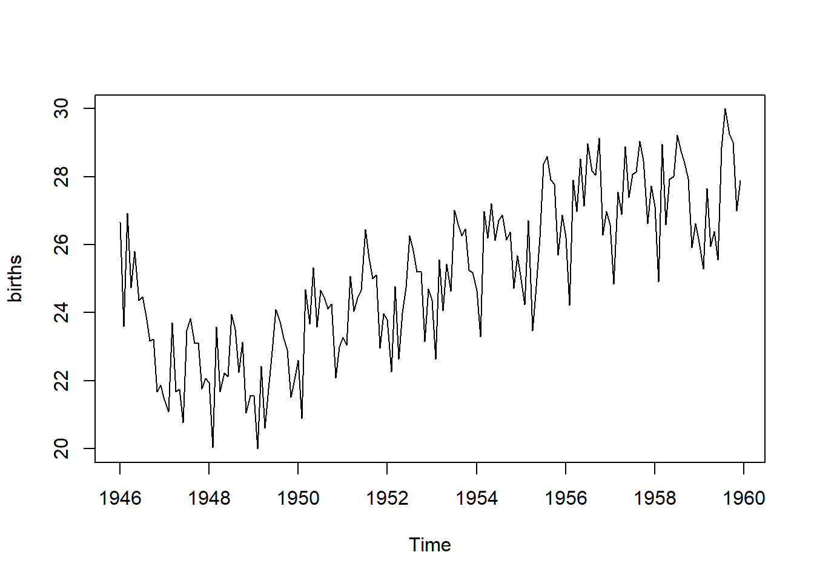
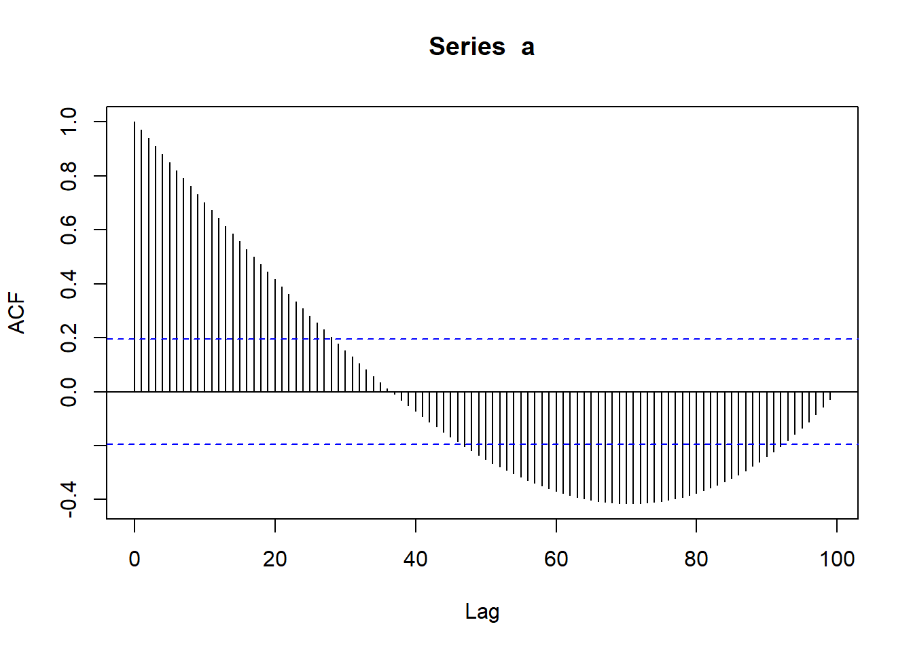
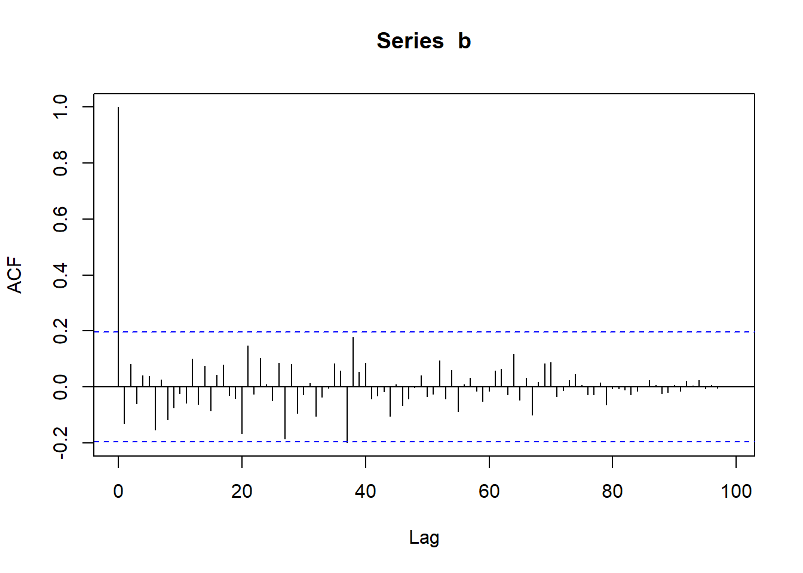
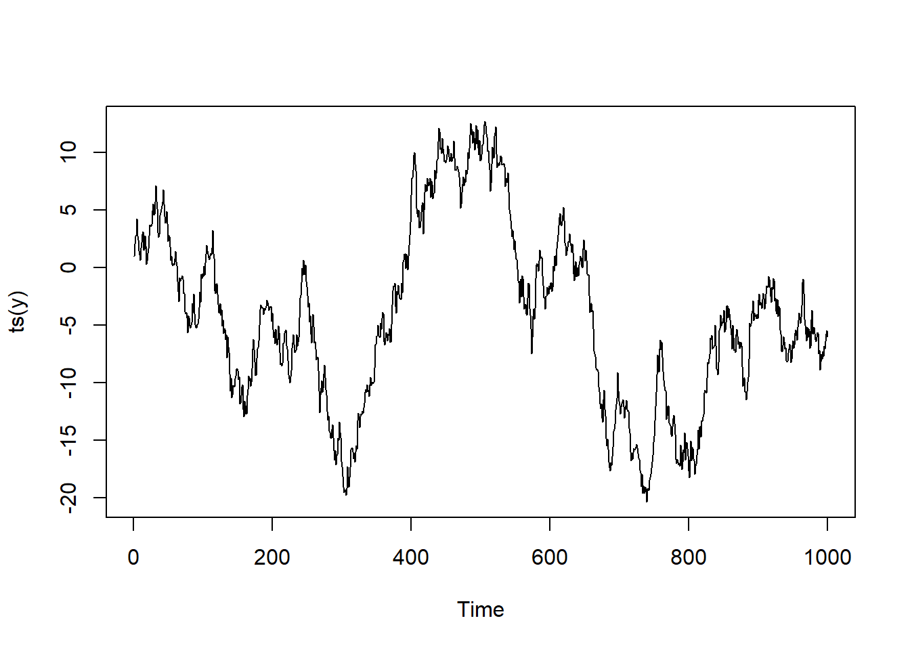
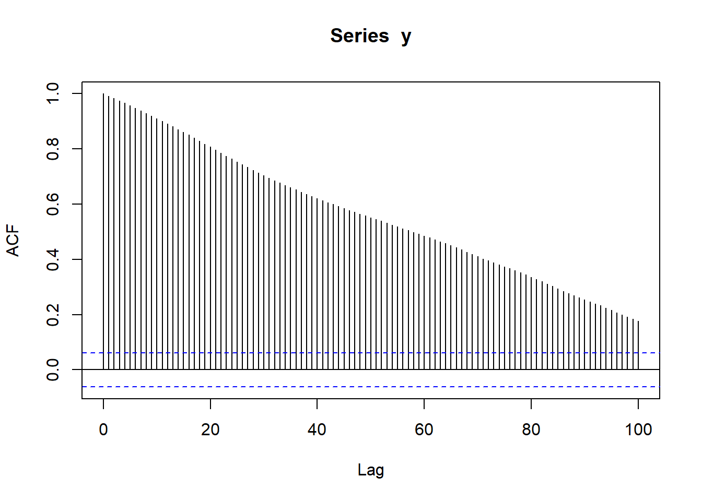
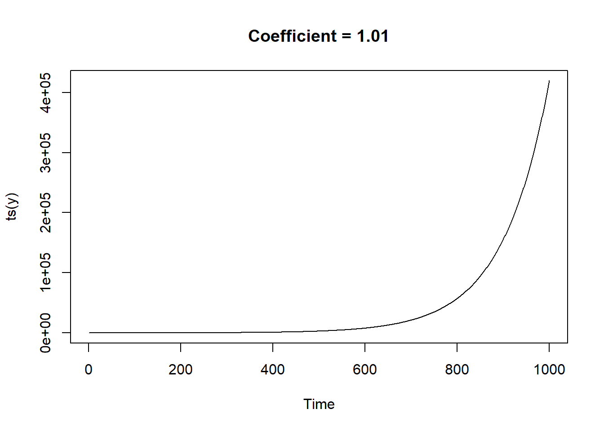
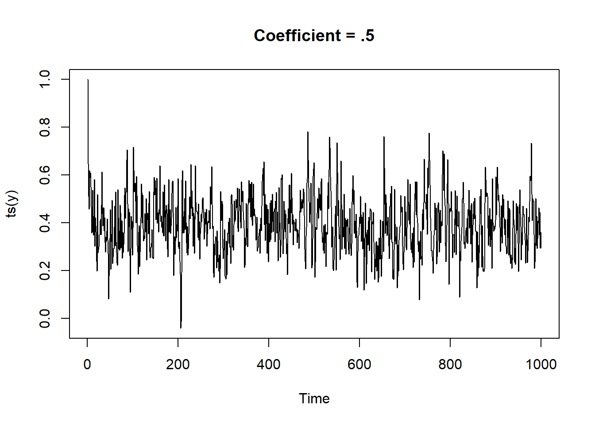

1 + 1[1] 2title: “Decision Trees” format: html editor: visual
Quarto enables you to weave together content and executable code into a finished document. To learn more about Quarto see https://quarto.org.
When you click the Render button a document will be generated that includes both content and the output of embedded code. You can embed code like this:
1 + 1[1] 2You can add options to executable code like this
[1] 4The echo: false option disables the printing of code (only output is displayed).
Given the data
| \(y\) | \(x\) |
|---|---|
| \(y_1\) | \(x_1\) |
| \(y_2\) | \(x_2\) |
| … | … |
| \(y_n\) | \(x_n\) |
We would like to approximate \(y_i\) with a function of \(x_i\), \(f(x_i)\). Assume that this function is linear
\[\begin{equation} y_i \approx \hat{y_i} = f_1(x_i) = \beta_0 + \beta_1 x_i \end{equation}\]
Let the error/residual of each approximation be \(e_i = y_i - \hat{y_i}\)
To do inferential statistics, estimating the error of \(\hat{\beta_1}\) or finding confidence interval for \(\beta_0\), we need to bring in a probability distribution. Assume that \(x_i\) is a known constant (non-random) and that
\[\begin{equation} y_i = \beta_0 + \beta_1 x_i + \epsilon_i \end{equation}\]
where
\(\epsilon_1, \epsilon_2,...,\epsilon_n \sim^{iid} N(0, \sigma)\). From this equation, we see that \(y_i \sim N(\beta_0 + \beta_1 x_i, \sigma^2)\). \(S_{xy}\) and \(S_{yy}\) are random, \(S_{xx}\) is non-random.
There are multiple ways to define the quality of the approximation. For example, in the least square method, one wants to minimize the total sum of the errors or residual sum square (RSS) or sum square errors (SSE)
\[\begin{equation} RSS = SSE = \sum e_i^2 = e_1^2 + e_2^2 +...+ e_n^2 = \sum e_i^2 \end{equation}\]
Notice that we use the summation notation (\(\sum e_i\)) to present a sum of all \(e_i^2\) for \(i\) from 1 to \(n\). A full version of \(\sum\) is \(\sum_{i=1}^n\). We will use \(\sum\) instead of \(\sum_{i=1}^n\) for simplicity.
In the least absolute error or least absolute deviations, one wants to minimize
\[\begin{equation} \sum e_i = |e_1| + |e_2| +...+ |e_n| \end{equation}\]
The values of \(\beta_0\) and \(beta_1\) that minimizes RSS is denoted by \(\hat{\beta_0}\) and \(\hat{\beta_1}\), respectively.
\[\begin{align} S_{xy} &= \sum_{i=1}^{n}(x_i-\bar{x})(y_i-\bar{y}) = \sum x_iy_i-n\bar{x}\bar{y} \\ S_{xx} &= \sum_{i=1}^{n}(x_i-\bar{x})^2 =\sum x_i^2 -n\bar{x_i}^2\\ S_{yy} &= \sum_{i=1}^{n}(y_i-\bar{y})^2 = \sum y_i^2 -n\bar{y_i}^2\\ \hat{\beta_{1}} &= \frac{\sum_{i=1}^{n}{(x_i-\bar{x})(y_i-\bar{y})}}{\sum_{i=1}^{n}(x_i-\bar{x})^2} = \frac{S_{xy}}{S_{xx}} \\ \hat{\beta_{0}} & = \bar{y} - \hat{\beta_{1}}\bar{x} \\ RSS = SSE &= \sum (y_i - \hat{y_i})^2 = \sum (y_i - \hat{\beta_0} - \hat{\beta_1}x_i)^2 \end{align}\]
We have some properties for the \(\beta_0\) and \(\beta_1\) as follows.
\[\begin{align} E\hat{\beta_0} &= \beta_0 \\ Var(\hat\beta_0) &= \sigma^2 \frac{\sum x_i^2}{nS_{xx}}\\ E\hat{\beta_1} &= \beta_1 \\ Var(\hat\beta_1) &= \frac{\sigma^2}{S_{xx}} \end{align}\]
\(S^2=\frac{SSE}{n-2} = \frac{S_{yy}}{\hat\beta_1\S_{xy}}\) is an unbiased estimator for \(\sigma^2\)
We have the following formula
\[ \sum_{i=1}^n (y_i - \bar{y}) = \sum_{i=1}^n (y_i - \hat{y_i}) + \sum_{i=1}^n (\hat{y}_i - \bar{y}) \]
The quantity \(TSS = \sum_{i=1}^n (y_i - \bar{y})\) can be though as the total amount of information (variance) in the response variable \(y\). This quantity is decomposed into \(RSS = \sum_{i=1}^n (\hat{y}_i - \bar{y})\) which can be thought as the information explained by the resgression models and \(RSS = \sum_{i=1}^n (y_i - \hat{y_i})\), which is the amount of information that can not be explained by the model (the sum of squared erros of the models).
This formula leads to the definition of \(R^2\)
\[ R^2 = 1 - \frac{RSS}{TSS} \]
Another way to view this formula is that TSS is actually the sum squared errors of the naive model \(y = \bar{y}\) (predicting \(y\) value by its average, disregarding \(x\)). Thus,
\[ R^2 = 1 - \frac{\text{Sum squared errors of Linear Model}}{\text{Sum squared errors of the naive Model}} \]
Thus, \(R^2\) also measure how good the linear model is when comparing with the naive model. This definition of \(R^2\) can be applied to measure the goodness of fit of other models, not just linear model.
To measure the goodness of fit of this linear approximation, we compare the approximation with a naive approximation, which is to approximate all \(y_i\) with their average, \(\bar{y}\). The naive model is a special case of the linear model where \(\beta_1 = 0\). In the other words, the naive models is
\[\begin{align} y = f_2(x) = \bar{y} \end{align}\]
The sum square error of the naive models is \(\sum(y_i-\bar{y})^2\). This quantity is also called the total sum square (SST or TSS). We use the following \(R^2\) to measure the goodness of fit of the linear model
\[\begin{align} R^2 = 1- \frac{\sum(y_i-\hat{y_i})^2}{\sum(y_i-\bar{y})^2} = 1 - \frac{SSE}{SST} \end{align}\]
It’s noticed that if the linear approximation fit the data perfectly (\(SSE = 0\)), \(R^2 = 1\).
We are interested in testing the following hypotheses for \(\beta_{1}\)
\[ H_0: \beta_1 = 0 \\ H_{\alpha}: \beta_1 \neq 0 \]
\[ F = \frac{Reg SS}{RSS/(n-2)} \sim F_{1, n-2} \]
\[ H_0: \beta_1 = d \\ H_{\alpha}: \beta_1 \neq d \]
We have that under \(H_0\)
\[ t = \frac{\hat{\beta_1}-d}{\sqrt{s^2/S_{xx}}} \sim t_{n-2} \]
It’s noticed that the F-test and the t-test have the same rejection region when \(d = 0.\)
A time series is denoted by \(y_t\), where \(t = 1, 2, 3...\) are the time unit.
To better analyze a time series, we often decompose it into three components: Time trend component (long term direction), Seasonal component (calendar related changes), and the random component.
For example, the time series of number of births per month in New York city, from January 1946 to December 1958, which is available at: http://robjhyndman.com/tsdldata/data/nybirths.dat
births <- scan("http://robjhyndman.com/tsdldata/data/nybirths.dat")
births <- ts(births, frequency = 12, start = c(1946, 1))
plot(births)
A plot shows that this time series has all thee components, trend, seasonal, and random. We decompose this series to see each component individually.
birthsComp <- decompose(births)
plot(birthsComp)
A time series \(y_t\) is called stationary if
From (2), \(var(y_t) = cov(y_t, y_t)\) does not depend on \(t\). In general, a stationary series has features that do not depend on the time \(t\). Thus, series with seasonal or trend are not stationary series.
We can calculate the correlation of the time series to itself with the one unit time delay. For example, we can calculate the correlation of \((y_1, y_2, ..., y_{9}\) with \((y_2, y_3, ..., y_10)\). This is called a lag 1 autocorrelation \(r_1\). More formally,
\[ r_1 = \frac{\sum_{t=2}^T(y_{t-1}-\bar{y})(y_{t}-\bar{y})}{\sum_{t=1}(y_{t}-\bar{y})^2} \] In general, the lag k autocorrelation is
\[ r_k = \frac{\sum_{t=k+1}^T(y_{t-k}-\bar{y})(y_{t}-\bar{y})}{\sum_{t=1}(y_{t}-\bar{y})^2}, \] for \(k=1,2,3...\).
We can consider lag-k autocorrelation as a function of \(k\). This function is called autocorrelation function (ACF).
We consider two series: the first one, \(a\), with a trend and the second one, \(b\), contains just a random component.
\[ a_t = 3t+4 + \epsilon, \\ b_t = \epsilon \] where \(\epsilon \sim N(0,1)\).
# acf of trend series
n=100
a = rep(0,n)
b = rep(0,n)
for (t in c(1:n))
{
a[t] = 3*t + 4 + rnorm(0, 1, n=1)
b[t] = rnorm(0, 1, n=1)
}
acf(a, lag.max = 100)
acf(b, lag.max = 100)
The ACF of series a show a strong positve autocorrelations in the first range of lags and then reverse to negative correlations. The ACF of b does not show a very weak correlation (within the blue lines) and the correlations die out as the lag increased.
ACF is a good tool to check if a series is stationary, which is a series \(b\) in this case.
A white noise time series consists of terms that are independent and comes from a identical distribution (iid). The distribution is often assumed to be normal distribution. The mean of the distribution is usually assumed to be zero.
\[\begin{equation} y_t \overset{\mathrm{iid}}{\sim} N(\mu,\sigma^2)\, \end{equation}\]
for \(t = 1, 2, ...\). A white noise is a stationary series.
A random walk series is a series that has the following form
\[ y_t = y_{t-1} + c_t \] where \(c_1, c_2,..., c_T\) are observations of a white noise.
A random walk can be written as
\[ y_t = y_0 + c_0 + c_1 + c_2 +...+c_{t} \]
Let’s plot a random walk \(y_t = y_{t-1} + \epsilon\) where \(y_1 = 1, \epsilon \sim N(0,1)\) and its ACF.
# acf of trend series
n=1000
y = rep(0,n)
y[1] = 1
for (t in c(2:n))
{
y[t] = y[t-1]+ rnorm(0, 1, n=1)
}
plot(ts(y))
acf(y, lag.max = 100)
It can be seen from the ACF that the random walk is non-stationary. In general, random walks are not stationary as its variance depend on the time \(t\).
If \(c_t \sim (\mu, \sigma^2)\), we have \(var(y_t) = (t)\sigma^2\) and \(E(y_t) = y_1 + t\mu\). Thus, both the mean and the variance of a random walks may depend on the time \(t\).
The autoregressive model of order 1, denoted by AR(1), is defined by
\[ y_t = \beta_0 + \beta_1y_{t-1} + \epsilon, \] where \(\epsilon\) is a white noise process such that \(Cov(\epsilon_{t+k}, y_{t})=0\) for \(k>0\). \(\beta_0\) and \(\beta_1\) are parameters (non-random). \(-1 \leq \beta_1 \leq 1\).
We notice that if \(\beta_1 = 1\), an AR(1) becomes a random walk, and if \(\beta_1 = 0\) am AR(1) becomes a white noise.
In the below, we plot autoregressive models for different \(\beta_1\) values.
n=1000
y = rep(0,n)
y[1] = 1
for (t in c(2:n))
{
y[t] = .2+ 1.01*y[t-1]+ rnorm(0, .1, n=1)
}
plot(ts(y))
title(main="Coefficient = 1.01")
n=1000
y = rep(0,n)
y[1] = 1
for (t in c(2:n))
{
y[t] = .2+ .5*y[t-1]+ rnorm(0, .1, n=1)
}
plot(ts(y))
title(main="Coefficient = .5")
The plot shows that the AR(1) with \(\beta_1 = .5\) is a stationary process. This is indeed true for any AR(1) with \(-1< \beta_1 < 1\). When \(\beta_1 = \pm 1\), the AR(1) is non-stationary.